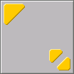
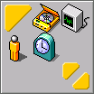

<!doctype html public "-//W3C//DTD HTML 4.0//EN" "http://www.w3.org/TR/REC-html32#dtd">
<html>
<head>
<title>Kagari Users Manual/How to Use</title>
<meta http-equiv="Content-Type" content="text/html; charset=ISO-2022-JP">
</head>
<body bgcolor="#FFFFFF" text="#505050" vlink="#c0c0c0" link="#404040" alink="#000000">

<div align="center">

<table align="center" width = "90%"><tr><td>

<br
clear="all">
<br><br>

<div align="center">$B!|(B</div><br><br>
<h1>How to Use</h1>

<div align="center">

</div>

<p>
First, launch Kagari.
</p>
<br><br>

<div align="center">

</div>

<p>
Launch your prefer applications.
</p>
<br><br>

<div align="center">

</div>

<p>
Launched applications have been logged. Click icons on Kagari, application will launch immediatry.
</p>

</td></tr></table>

</div>

</body>
</html>

